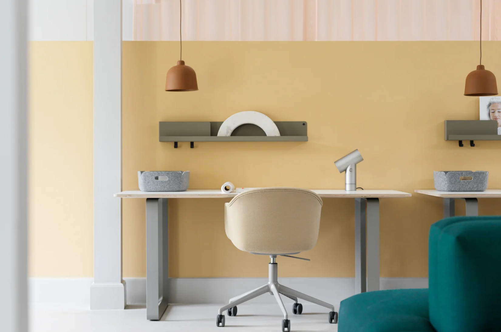
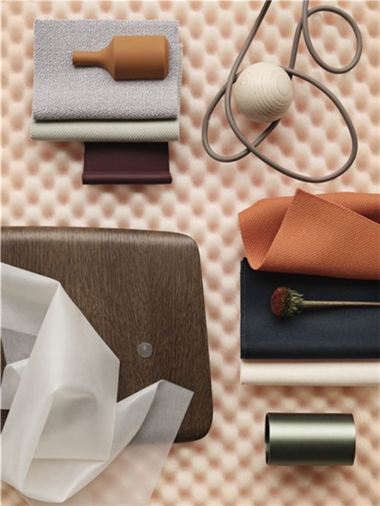

MIKA
TOL
VANEN
Mika Tolvanen은 2001년 Royal College of Art를 졸업한 후 자신의 작
업을 시작한 유명한 핀란드 디자이너입니다. Tolvanen은 핀란드 헬싱키
외곽의 Lauttasaari 섬에 있는 작업실과 작업실에서 주거용 및 계약용 제
품을 디자인합니다.
“목표는 제품을 디자인하는 것뿐만 아니라 디자인해야 할 경우를 살펴보는
것입니다. 객체를 실제로 정의하는 것은 보이는 것이 아니라 그것을 사용하
는 방법입니다. 디자인은 결코 노이즈를 너무 많이 만드는 측면이 되어서는
안 됩니다.”
스칸디나비아 디자인 -
"디자인에 접근하는 방식은 디자이너 개개인마다 매우 개별적입니다. 우리
가 이곳 핀란드에서 생활하는 방식은 우리 삶과 디자인 방식에 스며들어 있
습니다. 스칸디나비아 디자인은 항상 여기에 있었고 기간 사이에 간격이 없
었습니다. 수단만 새로운 디자인을 더욱 흥미롭게 만들고 있습니다."
물질성은 장인 정신에서 항상 그 역할을 하는 것이고, 저에게 스칸디나비아 물질성은 물질을 올바른 방식으로 사용하는 동시에 원하는 기능을 달성하는
수단으로 제시하는 아이디어와 관련이 있습니다. 그런 의미에서 재료는 동시에 디자인의 기회이자 경계를 제시합니다.
디자인은 어떻게 감정을 유발할 수 있으며 우리는 왜 다른 공간보다 한 공간에 끌리는가? 이러한 유형의 질문은 새로운 디자인을 만들기 위한 우리의 헌신을 이끄는데, 우리의 관점이 당신이 공간을 적절하게 느끼게 하는 것에 대해 성찰하게 해주기를
바랍니다.
우리의 인테리어는 진정한 아날로그 경험을 위한 풍경입니다. 우리의 집은 감각을
자극하는 물건으로 가득 차 있습니다. 추억과 감정을 불러일으키는 색상. 감정을 불러일으키는 재료. 우리의 잠재의식에 영향을 미치는 모양. 사물은 공간에 대한 우리
의 인상과 사물이 있을 때 느끼는 감정에 영향을 미칩니다.
물론 디자인에 대한 우리의 인식은 주관적입니다. 대상은 수신자에 따라 명확한 성격을 가지며 여러 메시지를 전달할 수 있습니다. 당신이 사랑스러워하는 작은 세부사항 일 수 있습니다. 손가락을 쭉 펴고 싶은 천. 램프를 켰을 때 나는 소리. 또는 당신을 진정시키는 소파의 색상. 우리는 각자 고유한 방식으로 디자인을 경험하고 색상,
모양, 재료 및 촉감이 주변 환경을 해석하는 방식에 영향을 미칩니다.

SUSTAINABLE
PERSPECTIVES
Muuto라는 이름은 새로운 관점을 의미하는 핀란드어 muuto에서 유래했습니다. 스칸디나비아의 뿌리를 바탕으로
우리는 오래 지속되는 미학과 정직한 표현으로 기능적이고 잘 만들어진 작품을 만듭니다. 새로운 Muuto 디자인을 소개하기 전에 강력한 유산을 기반으로 하지만 현대적인 맥락에서 새로운 관점을 추가하고 싶습니다. 이전에 만든 것을 어떻게든 개선하거나 도전합니다.
Muuto에서 우리는 우리의 운영에 대한 책임을 지고 우리가 내리는 선택과 우리의 우선 순위가 사람과 환경의 웰빙에 어떻게 영향을 미치는지 반영하는 것을 목표로 합니다. 우리가 선택한 재료부터 함께 일하는 파트너, 우리가 제품을 테스트하고 인증하는 독립적인 기관, 그리고 포장에 이르기까지 모든 과정을 거쳐야 합니다.
우리의 접근 방식은 지식과 호기심을 기반으로 합니다. 분야의 새로운 발전과 새로운 연구가 등장함에 따라 우리는 모든 사업 전반에 걸쳐 지속 가능성에 대한 새로운 관점을 계속 찾고 있습니다. 청취. 학습. 그리고 개선하고 있습니다.

Design
Collection
물체는 공간에 대한 우리의 인상과 물체가 있을 때 느끼는 느낌에 영향을 미칩니다.
단순한 디자인 그 이상
디자인이 개성을 갖기 위해서는 더 깊은 차원에서 우리에게 공명하는 세부 사항이 포함되며, 그 결과 존재감이 있는 대상이 됩니다. 식사와 사교를 위한 장면을 설정할 수 있습니다. 보다 집중적으로 작업할 수 있는 분위기입니다. 또는 휴식을 위한 웰빙 감각.
기분 좋은 방에 들어가는 기분은 누구나 알고 있습니다. 우리는 스칸디나비아 디자인에 대한 우리의 관점이 당신이 주변 환경과 그것이 당신에게 어떤 느낌을 주는지 반성하도록 영감을 주기를 바랍니다. 딱 맞는 느낌의 공간을 만들 수 있습니다.
마법은 우리가 생각하거나 보지 못하는 미묘한 세부 사항에 있습니다. 우리는 알지 못하는 사이에 이것을 느낍니다 몸은 그것을 경험합니다